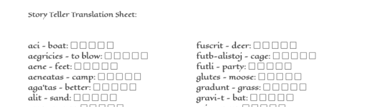

The Decipher Role Playing System
This site is a simple role-playing game system. The game uses little to no dice and randomness is replaced by players combining the words in ancient untranslated wizards text to progress the story. To play you need to generate a PDF, which can be done here by clicking the create button and then save to download a completely new generated language and player sheets. The players will randomly begin combining words, which the Game Master will translate and then tell everyone the outcome. Players are not allowed to use the translator page during the game and, through trial and error, must decode the language to solve puzzles, progress through the story, and succeed.
Example Game Scenario
- GM: You come to a revine. There is a small stream at the bottom. It is too treacherous to climb down. It's roughly 20 feet to the bottom.
- Player: I focus on the ravine and say "Tellue sem-a" (These are 2 words from their player sheet. The player is unaware that they just said the words "ice" and "fall").
- GM: Ice begins to rain down into the ravine. After a couple of minutes it stops. You have created a signifigant pile. Maybe 15 feet high (The GM marks that the player has used these 2 words once. The player can use each of them only 3 more times).
- Player: I focus on the ravine and say "Tellue sem-a" (Said with great gusto!).
- GM: The first pile of ice immediatly evaporates. A new pile fall in its place. You have created a pile of ice tall enough that you can jump to it and then to the other side of the ravine (The GM marks that the player has used these 2 words a second times).
In this example the player has clearly figured out that one of the words is ice and maybe that the other has somthing to do with falling. As the game progresses players will decipher more words and become more adept at solving puzzles, defeating foes, etc.
Game Master's Translation Sheet Example

Player Sheet Example